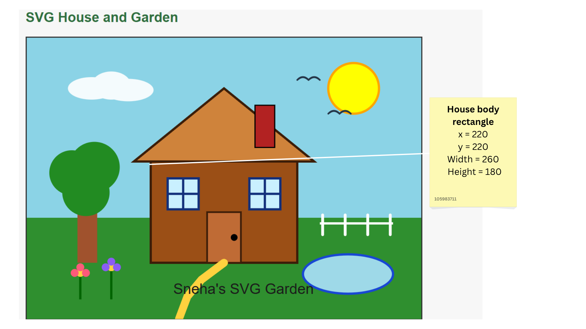
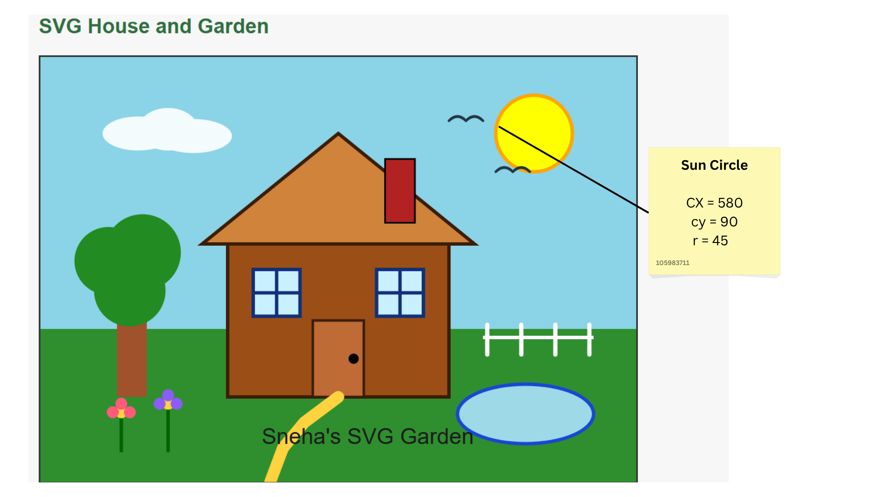
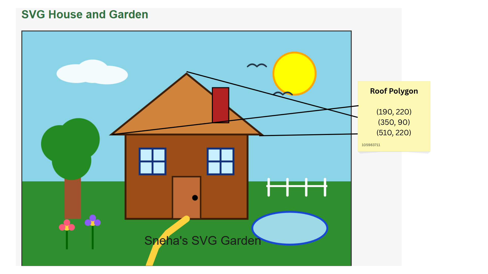
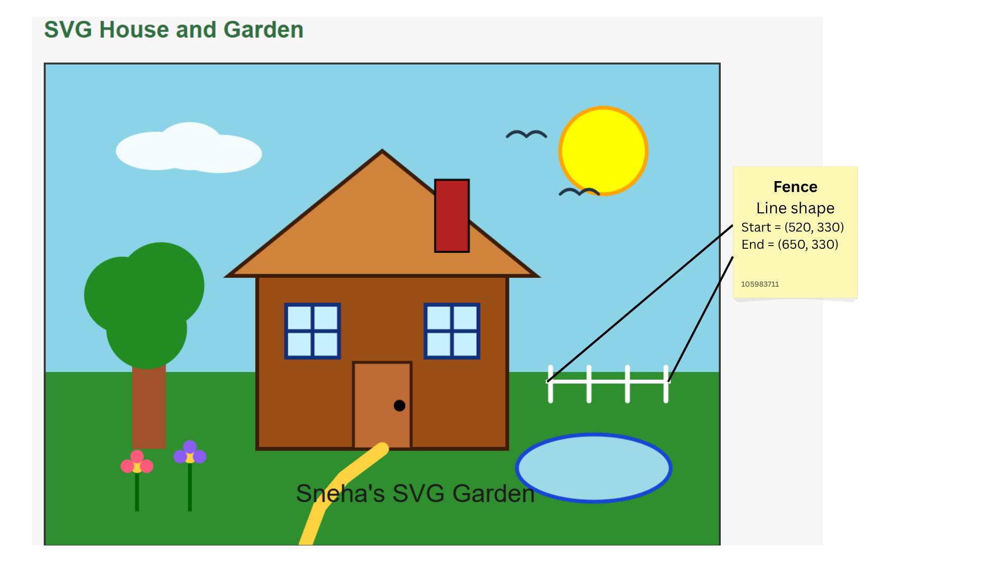

The SVG coordinate system starts at the top-left corner. The x value increases to the right, and the y value increases downward.
The house body uses a rectangle with x="220", y="220", width="260", and height="180".

The sun uses a circle with cx="580", cy="90", and r="45".

The roof uses a polygon shape. A polygon is made by listing several coordinate points. SVG connects these points together to create the shape.
In this example, the roof points are (190, 220), (350, 90), and (510, 220). The point (190, 220) is the left bottom corner, (350, 90) is the top peak, and (510, 220) is the right bottom corner.

The line uses x1, y1 for the starting point and x2, y2 for the ending point.

I used AI to help to understand how SVG coordinates work. Also, i took help from it to understand the code structure and how to use different shapes in SVG. However, I did not copy any code from AI. I modified the shapes, colours, positions, and structure myself for this exercise.